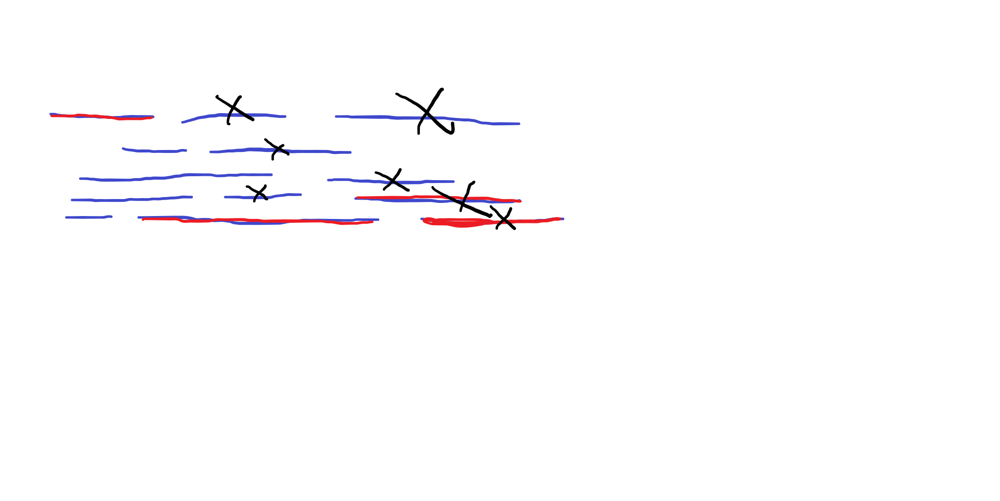

Picking the highest value won't work in every scenario, for example the points could be arranged in
2, 10, 1, 1
If the first player uses the always take the highest points greedy strategy then round one they'll take the left 2, then player 2 gets the left 10 and wins.
Assuming the cards are an array X[1 ... n]. We can recursively loop through the array and calculate the max points we can get based on the decision of choosing the left or right card
elmo(X)
n = length(X)
if n == 0
return 0
// elmo always chooses highest card value
if X[1] > X[n]
X = X[2 ... n]
else
X = X[1 ... n-1]
// try both taking the left and right card and return the max
left = X[1] + elmo(X[2 ... n])
right = X[n] + elmo(X[1 ... n - 1])
return max(left, right)
A greedy algorithm that solves this would be to start at the earliest start time. Then from there take the interval that starts after the previous interval starts and before it ends and has the biggest end. Just keep getting that interval until the end of the array.
Assuming L and R are sorted by starting point of the L part of the interval
initial call is line(1)
line(x)
if R[x] = max(R)
return 1
maxR = 0
for i = 1 to n
// if interval starts within interval x
if L[i] > L[x] && R[i] < R[x]
// take the max end that overlaps with x
if i > maxR
maxR = i
return line(maxR) + 1
The optimal solution requires that the earliest start and the latest end are in the solution.
If we reduce the array to only intervals that intersect with the first interval, the optimal solution has to be the intersecting interval that ends last in order to cover the entire array
We can keep extending the array by only intersecting intervals and the next optimal interval will always the the last to end

3. Week 7 problem woodcutting
on Kattis.
(a) Implement a greedy algorithm
using your preferred language and submit your implementation via Kattis.
The idea of the algorithm is to do work in the smallest to largest orders to complete order for customers
In any order the wait time of customer 2 is the sum of wait time for customer 1 + wait time of customer 2. Customer 3 will be the sum of customer 1 + customer 2 + customer 3.
Each time we add a customer the previous customers wait time are added to that new one. To get the average as low as possible we need to save the long wait times for last, or else they'll be in every sum
For example an optimal solution is:
1, 5, 10
Customer 1 = 1
Customer 2 = 1 + 5
Customer 3 = 1 + 5 + 10
So the 10 is only needed in the last wait time when done optimally
Unoptimal solution would be:
10, 5, 1
Customer 1 = 10
Customer 2 = 10 + 5
Customer 3 = 10 + 5 + 1
So the 10 is added to everyones wait time